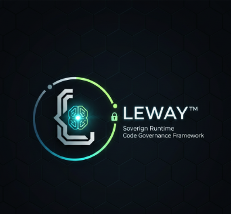

Leonard Lee
Full Stack Developer | AI Systems Architect | Operations Leader | Business Owner
Milwaukee, WI
leonardlee6@outlook.com
424-303-8580
github.com/4citeB4U
4citeb4u.github.io/Leonard-Lee-Resume

Professional Summary
Full-stack developer, AI systems architect, operations leader, and business owner of Leeway Industries, serving as head of Leeway Innovations. Brings 15+ years of leadership and operational experience building AI-driven platforms, autonomous agent systems, and scalable web applications. Creator of the Agent Lee ecosystem and the LEEWAY Standards framework, combining governance-first engineering, structured execution, and real-world operational leadership.
Core Skills
Leadership Profile
- 15+ years leading teams, operations, logistics, infrastructure execution, and business delivery.
- Built governance-first AI systems aligned to the LeeWay Standards model.
- Combines software delivery, innovation leadership, and real-world operational accountability.
Selected Projects
Agent Lee - AI Multi-Agent Operating System
Flagship System- Designed and built a fully autonomous agent system with orchestration layers, memory pipelines, and governance enforcement.
- Integrated AI models as tools instead of controllers, preserving agent-first execution and auditability.
- Developed real-time voice and interactive UI control surfaces for guided user interaction.
LEEWAY Framework
Governance Architecture- Created a modular web application framework with embedded AI, standards enforcement, and offline capability.
- Built governance scoring, audit pipelines, and compliance-oriented runtime patterns that demonstrate the LeeWay Standards in practice.
AI-Enhanced Web Applications
Browser AI / Real-Time Systems- Built React-based applications with voice-enabled assistants, persistent memory, and real-time collaboration workflows.
- Created polished CRM, content, and interactive demo experiences that connect AI capabilities to product value.
- Featured repository evidence includes LeeWay Standards, Agent Lee, LEEWAY-VSCODE, Leeway Runtime Fabric, and LeeWay Edge RTC.
Professional Experience
Founder, Business Owner, and Innovation Lead
Leeway Industries / Leeway Innovations / RapidWebDevelop / Agent Lee- Lead business strategy, product direction, and engineering execution across AI systems, client-facing platforms, and operational technology initiatives.
- Head Leeway Innovations while translating the LeeWay Standards into working products, governance patterns, and structured delivery systems.
Operations and Infrastructure Leadership
15+ Years- Managed teams, logistics workflows, maintenance coordination, and infrastructure execution in demanding environments.
- Improved execution quality, reliability, and efficiency through process design and systems thinking.
Key Achievements
- Built a fully self-contained AI agent ecosystem from scratch.
- Designed a governance-first AI architecture with runtime verification.
- Created production-ready systems without relying on a heavy backend stack.
Education
Bryant & Stratton College
Associate of Applied Science (AAS) - Business
Bayshore Campus, Wisconsin
Graduated August 2019 | GPA 3.8